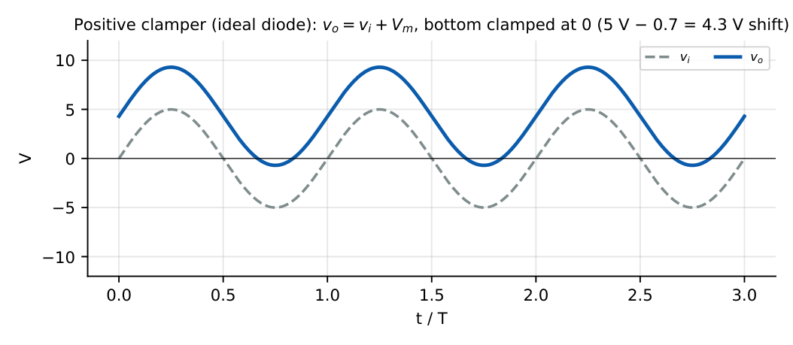
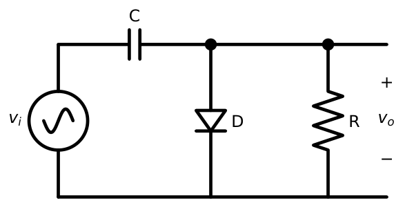
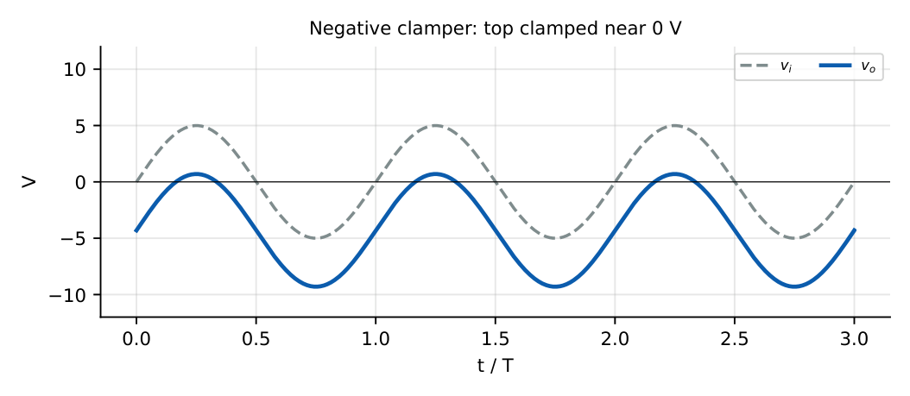
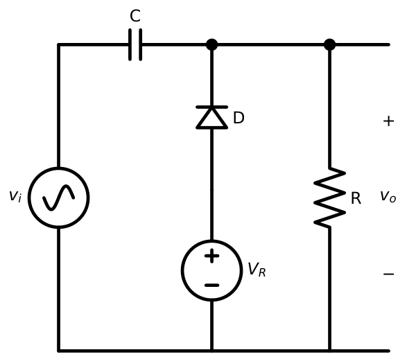
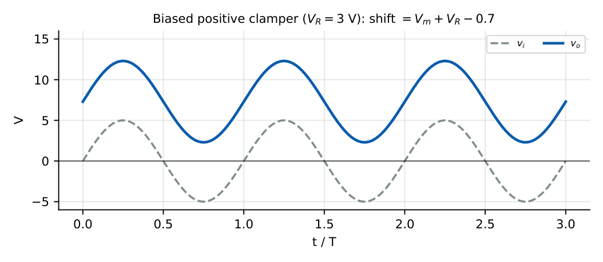
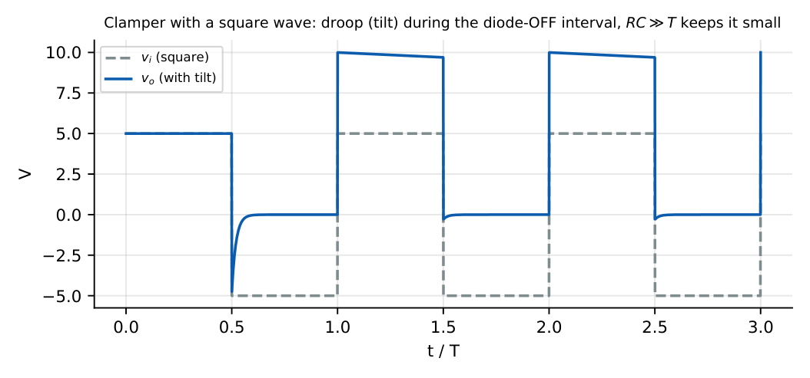

Diode Clampers
In this chapter
4.1 Clamping principle
A clamper adds a DC level to an AC signal so that one extreme of the waveform is “clamped” to a chosen reference. It does not change the shape or the peak-to-peak amplitude; it only shifts the waveform up or down. A clamper needs three parts: a capacitor (stores the DC shift), a diode (charges the capacitor quickly), and a resistor (a path to ground so that the capacitor holds its charge).
\(v_o(t)=v_i(t)+V_C\), where \(V_C\) is the (nearly constant) capacitor voltage.
Condition for good clamping: \(R_LC\gg T\) (typically \(R_LC\ge10T\)) and \((R_s+r_d)C\ll T\).
4.2 Positive clamper
The diode is connected with its cathode toward the output node (Figure 4.1). During the negative half-cycle it conducts and charges \(C\) to \(V_m-0.7\) (polarity: left plate \(+\), right plate \(-\)). After that the diode is OFF for the rest of the cycle and \[v_o=v_i+(V_m-0.7).\] The negative peak of the output sits at \(-0.7\) V, and the positive peak at \(2V_m-0.7\).

\(v_i=5\sin\omega t\), ideal diode: \(V_C=5\) V, \(v_o=5+5\sin\omega t\), from \(0\) to \(10\) V. Average (DC) output \(=5\) V.
4.3 Negative clamper
Reverse the diode. It conducts on the positive peak, charging \(C\) to \(V_m-0.7\) with opposite polarity, and \(v_o=v_i-(V_m-0.7)\): the top of the waveform is fixed at \(+0.7\) V.


Remember one rule: the diode holds the extreme that the diode itself points to. Diode with cathode at the output \(\Rightarrow\) the bottom of the wave is clamped to \(-V_{on}\) (positive clamper). Diode with anode at the output \(\Rightarrow\) the top is clamped to \(+V_{on}\) (negative clamper). Then \(v_o=v_i\pm(V_m-V_{on})\).
4.4 Biased clamper
Adding a DC source \(V_R\) in series with the diode shifts the clamped level to \(V_R-0.7\) (for the positive clamper). With the battery polarity of Figure 4.3 the diode conducts when the output tries to go below \(V_R-0.7\), so the bottom of the wave is fixed at that level: \[v_o=v_i+(V_m+V_R-0.7).\]


\(V_m=5\) V, \(V_R=3\) V, \(0.7\) V diode. \(V_C=5+3-0.7=7.3\) V. Output limits: \(-5+7.3=2.3\) V and \(5+7.3=12.3\) V. Reversing the battery (\(V_R=-3\) V) gives \(-3.7\ldots6.3\) V.
4.5 Practical clamper operation
Real components modify the ideal picture:
- The diode forward drop lowers the clamped level by \(0.7\) V (or \(0.3\) V for Schottky).
- The source resistance \(R_s\) and diode resistance \(r_d\) slow the charging: \(\tau_{ch}=(R_s+r_d)C\).
- The load \(R_L\) discharges the capacitor slowly between charging bursts, causing a small ripple or droop.
The first cycle (or first few) is a start-up transient: the capacitor is charging, and the output reaches its final level only after \(\sim5\tau_{ch}\). GATE problems almost always ask for the steady-state output.
4.6 Capacitor charging and discharging
- Charging (diode ON): \(V_C(t)=V_{final}(1-e^{-t/[(R_s+r_d)C]})\), fast because \(r_d\) is small.
- Discharging (diode OFF): \(V_C(t)=V_{C0}\,e^{-t/(R_LC)}\), slow because \(R_LC\gg T\).
In steady state, the charge lost in the OFF interval equals the charge added in the short ON interval.
4.7 Diode conduction interval
For a sinusoidal input the diode conducts only for a short interval near the peak (where the input exceeds the capacitor-held level). For a square-wave input the diode conducts during the whole clamping half-period (if \(r_dC\) is small). For a sine wave the conduction angle \(\theta_c\approx\sqrt{2\,\Delta V/V_m}\) rad, where \(\Delta V\) is the droop voltage. It gets narrower as \(RC\) grows.
4.8 Clamping voltage
Ideal diode: \(V_C=V_m\). Real diode: \(V_C=V_m-V_{on}\) (unbiased), \(V_C=V_m\pm V_R-V_{on}\) (biased).
Output DC level (average) \(\approx V_C\) for a symmetric input.
The clamper does not clamp the output to zero volts exactly, and it does not clip. Peak-to-peak output \(=\) peak-to-peak input. If a question shows a peak-to-peak change, the circuit is not a clamper.
4.9 Tilt and waveform distortion
For a square-wave input the capacitor discharges through \(R_L\) during the diode-OFF half-period and the output shows a tilt (sag).
Percentage tilt \(\approx\dfrac{T/2}{R_LC}\times100\% = \dfrac{1}{2fR_LC}\times100\%\), valid for \(R_LC\gg T\).

\(f=1\) kHz square wave, \(R_L=100\) k\(\Omega\), \(C=1\ \mu\)F: \(R_LC=0.1\) s, tilt \(=1/(2\times1000\times0.1)=0.5\%\).
4.10 Clamper design problems
Design a clamper for a \(1\) kHz, \(\pm5\) V sine wave, load \(R_L=100\) k\(\Omega\), so that the clamped waveform sags less than \(2\%\) per cycle.
Use \(R_LC\ge10T\): \(C\ge10\times1\,\mathrm{ms}/100\,\mathrm k=0.1\ \mu\)F. Choose \(C=0.1\) \(\mu\)F or larger. Charging time constant with \(R_s=100\) \(\Omega\), \(r_d=10\) \(\Omega\): \(110\times0.1\ \mu=11\ \mu\)s \(\ll T/2\): adequate.
4.11 GATE problems
Q1. A sine wave of amplitude \(5\) V drives a positive clamper (ideal diode, ideal capacitor, large \(R_L\)). The output DC level is V.
Q2. A \(\pm10\) V square wave drives a negative clamper with an ideal diode. The output alternates between (A) \(0\) and \(-20\) V (B) \(+10\) and \(-10\) V (C) \(0\) and \(+20\) V (D) \(+20\) and \(-20\) V.
Q3. A positive clamper with a Si diode and a \(2\) V battery (orientation such that the bottom is clamped at \(V_R-0.7\)) is driven by \(4\sin\omega t\). The maximum output voltage is V.
Q4. A clamper is fed with a \(2\) kHz square wave and has \(R_LC=0.05\) s. The percentage tilt is closest to (A) 0.5% (B) 2.5% (C) 5% (D) 12.5%.
Q5. The clamper’s peak-to-peak output compared with its peak-to-peak input is (A) larger (B) smaller (C) equal (D) depends on \(R_L\).
Answers: Q1: 5 V. Q2: (A). Q3: \(V_C=4+2-0.7=5.3\); max \(=4+5.3=9.3\) V. Q4: \(1/(2\times2000\times0.05)=0.5\%\) (A). Q5: (C).
- A \(\pm3\) V, 100 Hz sine drives a negative clamper with a \(0.7\) V diode. Output limits? [\(-5.3\) V to \(+0.7\) V]
- What value of \(V_R\) places the bottom of a positive-clamper output at \(+2\) V? [2.7 V]
- \(R_L=47\) k\(\Omega\), \(f=10\) kHz. Find \(C\) for \(R_LC=10T\). [21 nF]
- Why does \(R_L\to\infty\) give a perfect clamper? [Capacitor cannot discharge]